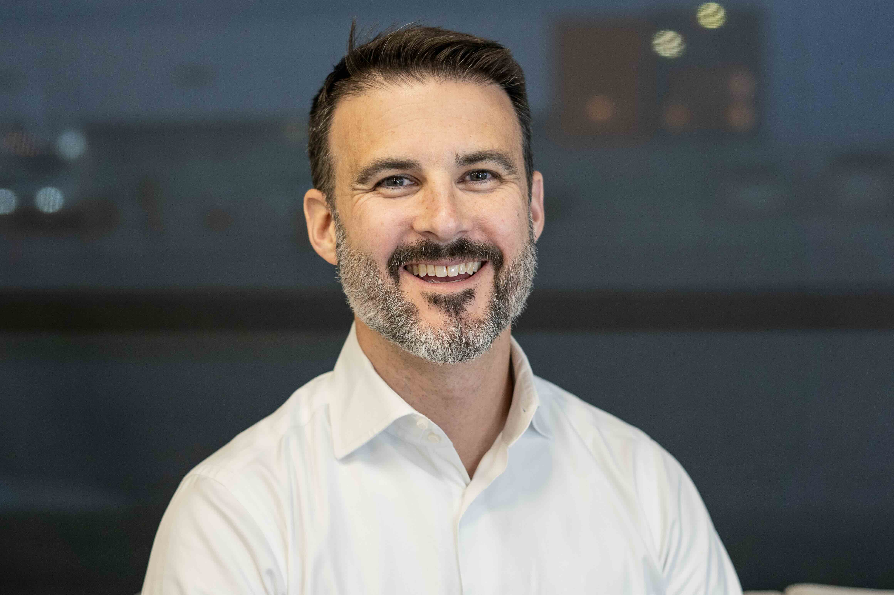
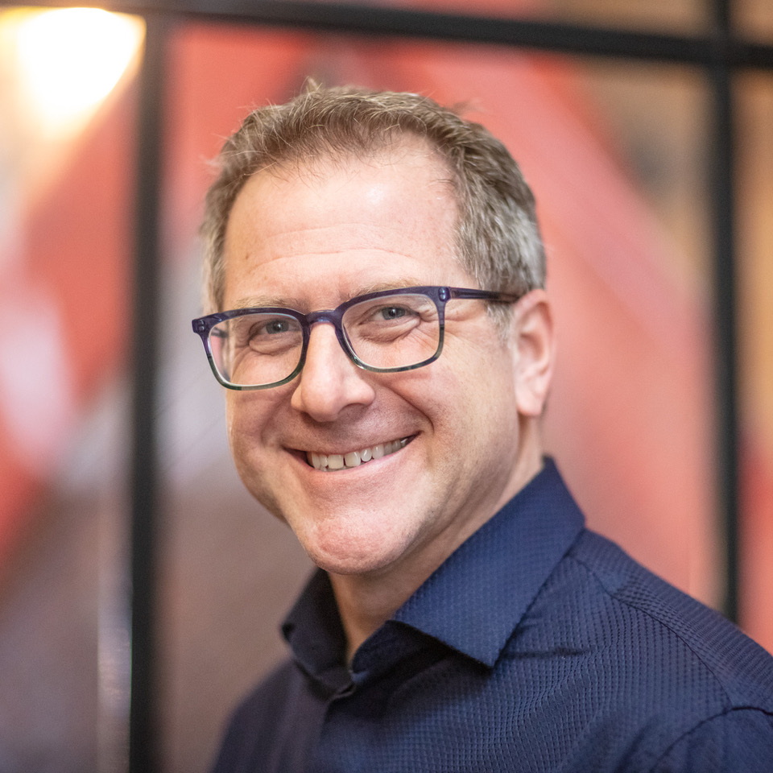

About the Panel
Robot companies are increasingly focusing on the home as the next frontier to tap into a massive, untapped consumer market — robots to help with daily chores, deliver personalized assistance, and support ageing-in-place and companionship. Unlike warehouses or factories, homes are chaotic and unpredictable spaces. They are also among the most intimate places, where privacy and trust are critical.
This panel explores the opportunities and challenges of introducing social robots into domestic life, and considers the messy realities of trust, surveillance, dependency, and failure inside the home. As we know from the challenges facing robot adoption in other sectors, technical capability does not necessarily equal social acceptance.
The panelists have all successfully deployed consumer robots in the home and tackled these challenges firsthand. The discussion will explore how a new class of home robots can earn their place in our homes and in our hearts — and why homes might present insurmountable challenges for humanoid robots. Looking ahead, the conversation considers how thoughtful design, clear value, and human-centered boundaries can turn skepticism into trust and unlock a more meaningful future for consumer robotics at home.
Panelists
Meet the Speakers

Ira Renfrew
Ira is building the next chapter of consumer technology: emotionally intelligent physical AI. Over the past decade, he has led teams that design and ship robots — from category creation with smart lawncare at iRobot, to delivery innovation with last-mile delivery robots at Amazon, to automating global freight networks as Chief Product Officer at Outrider. A consistent throughline in Ira's career is translating innovation into products and services that people trust — and building the teams, culture, and operating systems that make that possible. He brings a global perspective shaped by work across North America, Europe, the Middle East, and Asia. Ira holds an MBA from Harvard Business School and a BA from Stanford University.

Craig Allen
Craig is a veteran media and technology executive focused on bringing characters to life through innovation, storytelling, and interactive play. As the former Chief Creative Officer at Embodied, he led the development of MOXIE AI — a groundbreaking social robot featured on the cover of TIME and in the film M3GAN 2.0. Previously, Craig was a founding member of Disney Interactive (Toy Story, Hercules), led Jim Henson Interactive (where he pioneered an award-winning digital puppetry system), and co-founded Spark Unlimited (a video game studio notable for the first Call of Duty game for consoles). Currently, Craig serves as CEO of Snackshop and advises companies working to create a more playful world.
Shunsuke Aoki
Shunsuke founded Yukai Engineering with the vision of "Robotics for Fun Living." While studying at the University of Tokyo, he co-founded teamLab and served as its CTO; he later became CTO of pixiv, building his career at the intersection of technology and creative expression. Rather than focusing solely on functionality and efficiency, Yukai Engineering develops products that create emotionally engaging experiences. In 2025, the company launched "Mirumi," a bag charm robot that captured global attention — expanding robotics into collaborations with fashion brands and opening new possibilities for the field. Aoki served as a jury member of the Good Design Award from 2015 to 2021 and is currently a professor at Musashino Art University.
Samuel Ader
Samuel is VP of Growth & Supply at Cera, a leading digital-first home healthcare company that combines professional caregiving with AI-powered technology and the Genie robot to deliver care in patients' homes. Cera serves over 30 million people in the UK and Germany, partnering with the NHS and local governments. The company has deployed over 1,000 Genie robots in private homes and assisted living communities.
Moderator
Moderated by
Elizabeth Jochum, PhD
Elizabeth focuses on the impact of robotics on labor, with an emphasis on healthcare and beyond. Her mission is to help develop creative, value-sensitive, and human-centered solutions to ensure the technologies we build address the real needs of people. She also holds a research appointment as an Associate Professor at Aalborg University in Denmark.